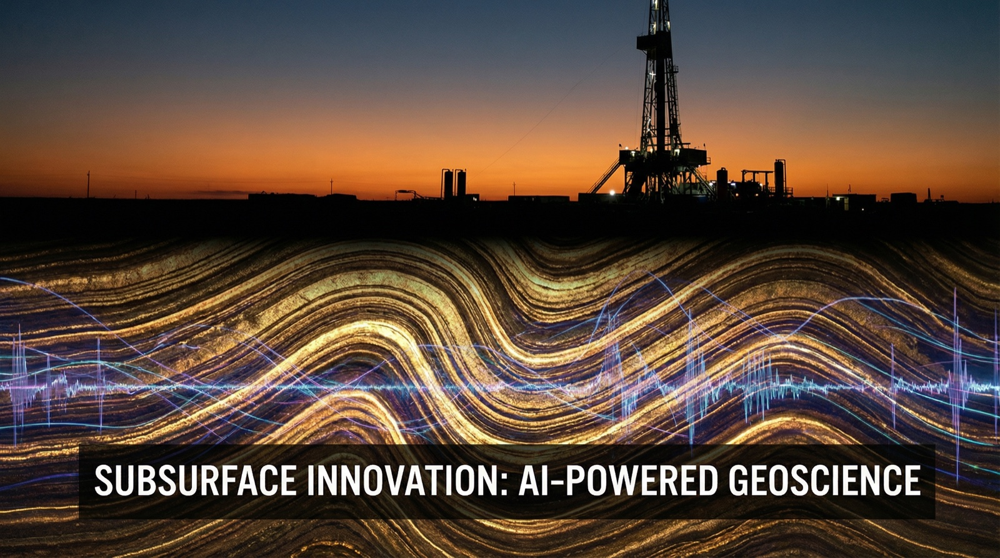

April 2026
The 1Q26 Industry
AI Report
The Global AI Divide. How the market rewards Value Creators and punishes Margin Defenders across six industries.
A cross-sectional analysis of risk-adjusted performance. We correlate each company's score with the business focus of its AI portfolio and the occupations that portfolio is aimed at. The goal is to isolate the behaviors the market is actively rewarding.
In this report, "we" and "our" refer to the author working in partnership with his AI collaborators.
Our core performance metric is the Information Ratio (IR). IR equals relative return divided by volatility. Relative return is the stock's return over its own index benchmark (SPY, MDY, IJR, or IWM). Volatility is its 3-month annualized standard deviation. IR separates companies generating genuine Alpha from those riding market waves or carrying excess risk. Companies with IR > 0.5 are classified as Winners. Those with IR < −0.5 are classified as Dogs.
Against those performance tiers, we classify each AI application on two axes. The first is the business focus it serves. The options are RUN, BUILD, or GROW. The second is the target occupation it augments or replaces.
AI applied to today's processes. It automates workflows, cuts unit costs, and reduces headcount in repetitive tasks. Defensive. Margin-preserving.
AI used to invent new products, models, or proprietary assets. Think molecules, algorithms, and autonomous systems. Offensive. Moat-creating.
AI deployed to deepen customer relationships, unlock pricing power, or open new markets. Revenue-accretive rather than cost-reductive.
The analysis spans publicly traded companies across six industry pillars, with a global scope enabled by their presence on U.S. exchanges.
The sample is anchored in U.S.-listed equities but extends globally through American Depositary Receipts (ADRs). 244 international companies trading as ADRs on NYSE, Nasdaq, and OTC markets are included alongside domestic issuers. This provides cross-border visibility into European, Asian, and Latin American champions. It avoids the data-quality compromises of off-exchange analysis.
Each AI application is mapped to the occupations it targets using the U.S. Standard Occupational Classification (SOC), administered by the Bureau of Labor Statistics. SOC provides a consistent, government-maintained vocabulary for roles. Examples range from "Radiologists (29-1224)" to "Heavy Truck Drivers (53-3032)". This common vocabulary enables like-for-like comparison of how companies deploy AI across the same labor categories.
Personal work. These are the author's personal observations. They do not represent the views of his employer or any advisory boards he serves on. This is a quarterly personal research project. The author maintains it to stay hands-on with modern AI practice, including short-form video creation, driving attention, and building agentic pipelines.
Not investing advice. This report is a technical analysis of 1Q26 risk-adjusted performance correlated with observed AI application patterns by business focus (Run / Build / Grow) and by SOC-coded occupation. Nothing herein constitutes a recommendation to buy, sell, or hold any security. Past performance is not indicative of future results.
The companies generating Alpha in healthcare are not the ones making doctors type faster. They are the ones compressing a decade of drug discovery into a handful of quarters.
Top performers build proprietary generative platforms to design new medicines and identify drug targets in months rather than years. One major player saved over $1 billion in 2025 by using AI to accelerate its design cycle.
Underperformers reduce headcount in pathology or save 15 minutes of doctor typing time. Efficient, but commodity tools with no competitive moat.
In finance, the market no longer pays for AI that lowers unit costs. It pays for AI that generates a proprietary information edge. That edge moves benchmark-beating basis points.
Top performers use AI for proprietary trading and pricing edges. One asset manager reports 94% of AI-backed strategies outperforming benchmarks. They use data as an offensive weapon.
Struggling firms use AI to untangle their own legacy. They automate claims and save back-office hours. They use data to defend, not to attack.
Generative AI has commoditized the act of making creative output. The premium now accrues to the companies that own the relationship between the output and the audience.
Winners solve the "last mile" of user experience. A leading global newspaper uses AI to match ads so precisely that digital revenue grew 20%.
Underperformers bolt AI features onto website builders and design software. Every competitor has access to the same models. Margins compress fast.
Retail Alpha is now a function of velocity. Every minute a product sits unshelved, uncounted, or misrouted is a minute of margin lost. AI has become the primary tool for closing that gap.
Top retailers eliminate physical inventory friction. A major discount retailer uses AI for "game-changing" demand forecasting so shelves are never empty.
Underperformers manage organizational dead weight such as labor scheduling and delivery routing. They patch the past instead of driving today's sales.
The physical world is where durable AI advantage is being built. A chatbot can be swapped out by a competitor in a quarter. An autonomous route network compounds for a decade.
High-performers tackle the "dirty" work of the physical world. One logistics giant has surpassed 50,000 autonomous miles with zero accidents.
Underperformers optimize booking engines and customer service chatbots. Lower cost-to-serve, but ships and planes don't move any more reliably.
Energy is the sharpest expression of the winner/loser split. The same technology that unlocks new barrels of production for one company is used to patch transmission faults for another. The market knows the difference.

Winning companies master the physical subsurface. A major energy producer reduced drilling costs by 12% by using AI to "see" into the earth.
Regulated utilities deploy AI against wildfires and storms. Vital for safety, but the savings flow to ratepayers, not shareholders.
Across all sectors, the maximum reward goes to the players who bridge the digital brain to a physical or proprietary result. Not those who merely patch the margins of the old enterprise.
The pattern is consistent across all six pillars. Where AI is deployed to create, the market assigns durable premium multiples. Creation means new molecules, new alpha, new audience relationships, new velocity, new autonomous capacity, and new resources.
Where AI is deployed only to defend, the market gives credit once and then moves on. Defense means trimming admin cost, patching legacy process, or squeezing the cost of an existing service. The tools are commoditized the moment a competitor buys the same vendor.
For executives setting 2026 AI strategy, the question is no longer "where can we automate?" It is "where can our AI portfolio compound into an asset the market will pay for?"